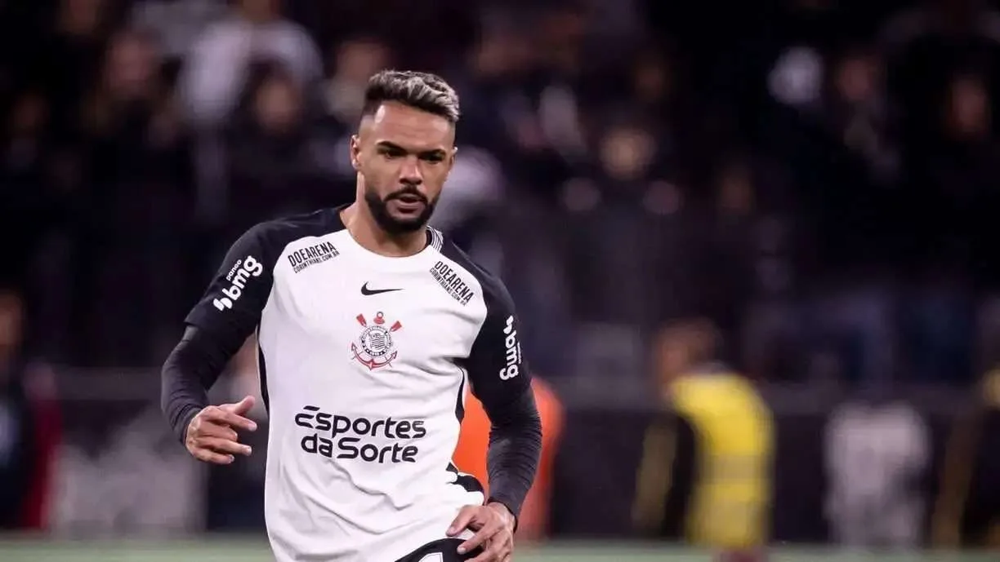

Raniele avança na recuperação e Joaquim Grava explica cenário após artroscopia
Ex-médico do Corinthians destaca evolução das técnicas de artroscopia; volante já iniciou transição física, mas retorno depende da recuperação.

O volante Raniele deu novos passos na recuperação de uma lesão no joelho direito. Após sofrer uma entorse no clássico contra o Palmeiras, o jogador passou por artroscopia para tratar uma lesão no menisco lateral e já iniciou atividades de transição física, com corridas no gramado do centro de treinamento.
Em entrevista ao Meu Timão repercutida pelo Terra neste domingo, 8 de novembro, Joaquim Grava, ex-chefe do departamento médico do Corinthians, explicou como a evolução da artroscopia mudou o tratamento de lesões meniscais no futebol.
O que isso significa?
Segundo o médico, os procedimentos atuais costumam ser menos invasivos do que as cirurgias realizadas décadas atrás, quando o afastamento podia durar meses. Ele citou exemplos de atletas que retornaram em aproximadamente três semanas e apontou que, em determinados casos sem intercorrências, a recuperação pode ocorrer em três a quatro semanas.
Esse intervalo é uma referência geral apresentada pelo especialista, não um prazo oficial de retorno de Raniele. O tempo efetivo depende das características da lesão, do procedimento realizado, da resposta do atleta e da avaliação do departamento médico responsável.
A notícia positiva é a progressão para exercícios em campo. Ainda assim, a reintegração aos treinos coletivos e a disponibilidade para jogos dependem das próximas etapas de recuperação. O Corinthians não anunciou, nessa reportagem, uma data definitiva para o retorno do volante.
Fonte da apuração: Terra, 08/11/2026.